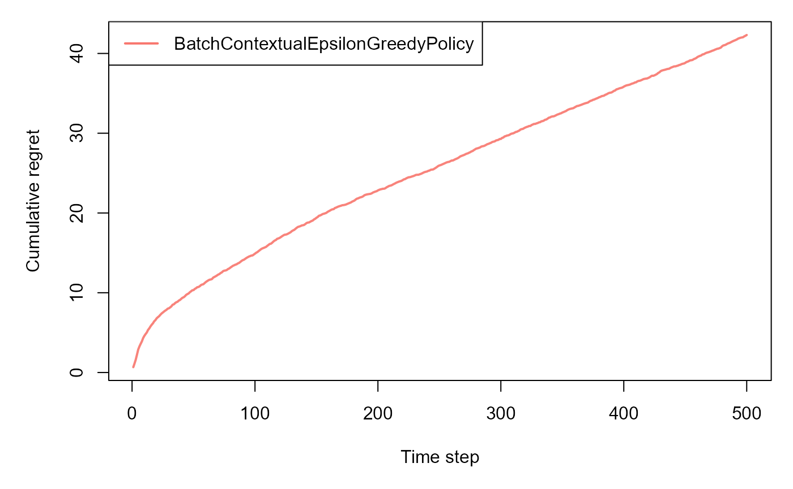

Using cram_bandit_sim() for On-Policy Simulation and Evaluation
Source:vignettes/cram_bandit_simulation.Rmd
cram_bandit_simulation.RmdWhat is cram_bandit_sim()?
The cram_bandit_sim() function runs on-policy
simulation for contextual bandit algorithms using the CRAM
method. It evaluates the statistical properties of policy value
estimates such as:
-
Prediction error
-
Variance estimation error
- Empirical coverage of confidence intervals
This is useful for benchmarking bandit policies under controlled, simulated environments.
Requirements
You need to provide:
-
bandit: a contextual bandit environment object (e.g.ContextualLinearBandit)
-
policy: a policy object (e.g.BatchContextualLinTSPolicy)
-
horizon: number of time steps
-
simulations: number of repeated simulations
- Optional:
alpha,seed,do_parallel
Example: CRAM Simulation with LinTS Policy
# Setup
library(contextual)
# Define a bandit
bandit <- ContextualLinearBandit$new(k = 3, d = 5, sigma = 0.1)
# Define a policy
policy <- BatchContextualLinTSPolicy$new(v = 0.2, batch_size = 5)
# Run simulation
result <- cram_bandit_sim(
horizon = 100,
simulations = 10,
bandit = bandit,
policy = policy,
alpha = 0.05,
do_parallel = FALSE,
seed = 123
)Bandit Simulation
horizon <- 500L
simulations <- 100L
k <- 4
d <- 3
list_betas <- cramR:::get_betas(simulations, d, k)
bandit <- cramR:::ContextualLinearBandit$new(k = k, d = d, list_betas = list_betas, sigma = 0.3)
policy <- cramR:::BatchContextualEpsilonGreedyPolicy$new(epsilon = 0.1, batch_size = 5)
sim <- cram_bandit_sim(
horizon, simulations,
bandit, policy,
alpha = 0.05, do_parallel = FALSE
)
#> Simulation horizon: 500
#> Number of simulations: 101
#> Number of batches: 1
#> Starting main loop.
#> Finished main loop.
#> Completed simulation in 0:00:04.638
#> Computing statistics.
print(sim)
#> $estimates
#> sim estimate variance_est estimand prediction_error est_rel_error
#> <int> <num> <num> <num> <num> <num>
#> 1: 1 0.5017577 0.0089906657 0.5445425 -0.0427847832 -0.0785701446
#> 2: 2 0.6189290 0.0007709980 0.5981170 0.0208120529 0.0347959584
#> 3: 3 0.3455183 0.0574641827 0.5528602 -0.2073419542 -0.3750350368
#> 4: 4 0.5837325 0.0010253244 0.5998785 -0.0161459620 -0.0269153869
#> 5: 5 0.3333935 0.0183438945 0.5228533 -0.1894598043 -0.3623574960
#> 6: 6 0.5137367 0.0013894431 0.4651693 0.0485673660 0.1044079358
#> 7: 7 0.6620854 0.0045512621 0.5694665 0.0926188229 0.1626413806
#> 8: 8 0.6704123 0.0018381022 0.7159943 -0.0455819026 -0.0636623863
#> 9: 9 0.5326382 0.0010390982 0.5572175 -0.0245792402 -0.0441106764
#> 10: 10 0.4698764 0.0013506076 0.5061488 -0.0362724215 -0.0716635533
#> 11: 11 0.6390434 0.0041663962 0.5721729 0.0668704579 0.1168710693
#> 12: 12 0.5954521 0.0010635500 0.5413280 0.0541241073 0.0999839391
#> 13: 13 0.4607073 0.0050745461 0.4598595 0.0008478800 0.0018437808
#> 14: 14 0.4648931 0.0016996746 0.4089102 0.0559828894 0.1369075274
#> 15: 15 0.2174046 0.0243192919 0.4197489 -0.2023442877 -0.4820603573
#> 16: 16 0.4904415 0.0010992578 0.4781373 0.0123042466 0.0257337122
#> 17: 17 0.6654798 0.0014336626 0.5170318 0.1484480006 0.2871158025
#> 18: 18 0.6748404 0.0021942552 0.6778199 -0.0029794314 -0.0043956093
#> 19: 19 0.5387263 0.0076842782 0.5064235 0.0323027620 0.0637860627
#> 20: 20 0.6395227 0.0021974001 0.5643850 0.0751377214 0.1331320401
#> 21: 21 0.5722331 0.0017006120 0.5083031 0.0639300095 0.1257714319
#> 22: 22 0.5370528 0.0037995951 0.5991923 -0.0621395465 -0.1037055134
#> 23: 23 0.6004996 0.0021958896 0.5800736 0.0204259345 0.0352126577
#> 24: 24 0.6083162 0.0050001302 0.6183482 -0.0100319263 -0.0162237508
#> 25: 25 0.5740335 0.0010634455 0.5910484 -0.0170148288 -0.0287875406
#> 26: 26 0.4860106 0.0248606203 0.6403480 -0.1543374015 -0.2410211487
#> 27: 27 0.5536516 0.0023158683 0.5988126 -0.0451609679 -0.0754175342
#> 28: 28 0.5169974 0.0049163531 0.5258604 -0.0088630483 -0.0168543747
#> 29: 29 -2.1191887 9.0771030217 0.5462983 -2.6654870535 -4.8791786797
#> 30: 30 0.7475257 0.0015568325 0.6642620 0.0832637246 0.1253477143
#> 31: 31 0.5767502 0.0013215883 0.5838684 -0.0071182656 -0.0121915573
#> 32: 32 0.4896574 0.0008165182 0.4822683 0.0073890887 0.0153215315
#> 33: 33 0.6719951 0.0014106350 0.6758467 -0.0038516056 -0.0056989338
#> 34: 34 0.4764243 0.0246272110 0.6249639 -0.1485396256 -0.2376771336
#> 35: 35 0.6029144 0.0025771860 0.5554696 0.0474448465 0.0854139412
#> 36: 36 0.6561539 0.0055411531 0.6807954 -0.0246415405 -0.0361952208
#> 37: 37 0.6089547 0.0035024706 0.5712634 0.0376913232 0.0659788851
#> 38: 38 0.5676137 0.0011158692 0.5990288 -0.0314150631 -0.0524433307
#> 39: 39 0.3694683 0.0019769898 0.3754663 -0.0059979884 -0.0159747714
#> 40: 40 0.6417252 0.0043880159 0.6006261 0.0410991455 0.0684271758
#> 41: 41 0.5792268 0.0011235993 0.5839465 -0.0047197134 -0.0080824412
#> 42: 42 0.5586279 0.0055275451 0.5823086 -0.0236807449 -0.0406669988
#> 43: 43 0.3582330 0.0024488026 0.3276013 0.0306317114 0.0935030181
#> 44: 44 0.5068864 0.0006430995 0.5064009 0.0004855044 0.0009587353
#> 45: 45 0.7417242 0.0014031729 0.6872763 0.0544478250 0.0792226082
#> 46: 46 0.4910630 0.0016724234 0.4979208 -0.0068577976 -0.0137728685
#> 47: 47 0.6256094 0.0017294602 0.5937348 0.0318746307 0.0536849638
#> 48: 48 0.5598116 0.0020497925 0.5316100 0.0282015760 0.0530493723
#> 49: 49 0.7516421 0.0017009423 0.6690764 0.0825656773 0.1234024621
#> 50: 50 0.5996121 0.0019008599 0.5281070 0.0715050382 0.1353987581
#> 51: 51 0.6295201 0.0020805334 0.6470065 -0.0174863879 -0.0270266051
#> 52: 52 0.5724893 0.0009691105 0.5240569 0.0484323761 0.0924181593
#> 53: 53 0.6486673 0.0016762675 0.6432101 0.0054572318 0.0084843695
#> 54: 54 0.4782135 0.0015887938 0.5162136 -0.0380001635 -0.0736132506
#> 55: 55 0.5003852 0.0056962562 0.4091676 0.0912175513 0.2229344165
#> 56: 56 0.5034387 0.0019197685 0.4667933 0.0366453694 0.0785044822
#> 57: 57 0.6982961 0.0030676937 0.6610340 0.0372620958 0.0563694073
#> 58: 58 0.6053892 0.0140214238 0.5422465 0.0631427675 0.1164466182
#> 59: 59 0.4441367 0.0026254866 0.4213550 0.0227817447 0.0540678163
#> 60: 60 0.7526088 0.0076305113 0.6014569 0.1511518983 0.2513095929
#> 61: 61 0.4896763 0.0056383277 0.4275514 0.0621248788 0.1453038851
#> 62: 62 0.5705590 0.0074579340 0.6049983 -0.0344392644 -0.0569245675
#> 63: 63 0.5264744 0.0014694889 0.4810370 0.0454373886 0.0944571667
#> 64: 64 0.6837173 0.0047937465 0.7089580 -0.0252407107 -0.0356025491
#> 65: 65 0.4297868 0.0064204076 0.3844496 0.0453371438 0.1179273972
#> 66: 66 0.5694287 0.0023131787 0.4789663 0.0904623931 0.1888700737
#> 67: 67 0.5042332 0.0123607863 0.5487671 -0.0445338767 -0.0811526026
#> 68: 68 0.3843057 0.0088062639 0.4485597 -0.0642540162 -0.1432451744
#> 69: 69 0.6766113 0.0042314777 0.5980372 0.0785740620 0.1313865702
#> 70: 70 0.5867536 0.0038092869 0.5797907 0.0069629340 0.0120093925
#> 71: 71 0.6978945 0.0011959045 0.6324704 0.0654241258 0.1034421905
#> 72: 72 0.5683481 0.0048758125 0.5249744 0.0433737042 0.0826206148
#> 73: 73 0.6370002 0.0030962141 0.6372674 -0.0002671567 -0.0004192224
#> 74: 74 0.4127460 0.0038287596 0.4383629 -0.0256169094 -0.0584376775
#> 75: 75 0.4780651 0.0108196762 0.4653262 0.0127389104 0.0273763040
#> 76: 76 0.6509041 0.0033485445 0.6506095 0.0002945800 0.0004527753
#> 77: 77 0.6292353 0.0012967632 0.5831126 0.0461226971 0.0790974102
#> 78: 78 0.5437774 0.0007938156 0.4829140 0.0608633744 0.1260335726
#> 79: 79 0.7427696 0.0031663304 0.7065272 0.0362424642 0.0512966315
#> 80: 80 0.5425855 0.0019641894 0.5481508 -0.0055653021 -0.0101528660
#> 81: 81 0.5197554 0.0048798479 0.5827652 -0.0630098026 -0.1081221130
#> 82: 82 0.5426813 0.0012636952 0.4906194 0.0520619425 0.1061147344
#> 83: 83 0.7853279 0.0018017217 0.7149549 0.0703730421 0.0984300452
#> 84: 84 0.7188162 0.0011805727 0.7086060 0.0102102161 0.0144088769
#> 85: 85 0.4960613 0.0007445642 0.5642763 -0.0682149809 -0.1208893306
#> 86: 86 0.4138832 0.0026729463 0.4343485 -0.0204653503 -0.0471173487
#> 87: 87 0.4860988 0.0020924787 0.5084793 -0.0223805567 -0.0440146826
#> 88: 88 0.5920957 0.0011606226 0.5885485 0.0035471761 0.0060269903
#> 89: 89 0.6240917 0.0028470052 0.6036379 0.0204538048 0.0338842303
#> 90: 90 0.6757469 0.0017367887 0.6248632 0.0508837461 0.0814318225
#> 91: 91 0.4905933 0.0019050290 0.4847009 0.0058924735 0.0121569280
#> 92: 92 0.5115639 0.0034775579 0.5500221 -0.0384582232 -0.0699212326
#> 93: 93 0.6265034 0.0018818107 0.6151870 0.0113163606 0.0183949921
#> 94: 94 0.4956177 0.0036720461 0.4219392 0.0736784969 0.1746187486
#> 95: 95 0.6340703 0.0171949356 0.7612616 -0.1271913039 -0.1670796236
#> 96: 96 0.6125654 0.0008937470 0.6630469 -0.0504815702 -0.0761357411
#> 97: 97 0.5658907 0.0009155062 0.5719100 -0.0060192899 -0.0105248899
#> 98: 98 0.5704144 0.0009436609 0.5829141 -0.0124997243 -0.0214435091
#> 99: 99 0.3937577 0.0057148836 0.4232778 -0.0295200978 -0.0697416613
#> 100: 100 0.5309513 0.0014341470 0.5001337 0.0308176348 0.0616187973
#> sim estimate variance_est estimand prediction_error est_rel_error
#> variance_prediction_error std_error ci_lower ci_upper
#> <num> <num> <num> <num>
#> 1: -0.8807182 0.09481912 0.31591566 0.6875998
#> 2: -0.9897709 0.02776685 0.56450699 0.6733510
#> 3: -0.2376059 0.23971688 -0.12431818 0.8153547
#> 4: -0.9863967 0.03202069 0.52097315 0.6464919
#> 5: -0.7566262 0.13543963 0.06793667 0.5988503
#> 6: -0.9815659 0.03727523 0.44067855 0.5867948
#> 7: -0.9396171 0.06746304 0.52986022 0.7943105
#> 8: -0.9756134 0.04287309 0.58638263 0.7544421
#> 9: -0.9862140 0.03223505 0.46945872 0.5958178
#> 10: -0.9820811 0.03675061 0.39784650 0.5419063
#> 11: -0.9447232 0.06454763 0.51253233 0.7655544
#> 12: -0.9858896 0.03261211 0.53153355 0.6593707
#> 13: -0.9326745 0.07123585 0.32108763 0.6003270
#> 14: -0.9774499 0.04122711 0.38408947 0.5456968
#> 15: -0.6773488 0.15594644 -0.08824483 0.5230540
#> 16: -0.9854158 0.03315506 0.42545879 0.5554242
#> 17: -0.9809792 0.03786374 0.59126824 0.7396914
#> 18: -0.9708882 0.04684288 0.58303009 0.7666508
#> 19: -0.8980504 0.08766001 0.36691580 0.7105367
#> 20: -0.9708464 0.04687643 0.54764656 0.7313988
#> 21: -0.9774375 0.04123848 0.49140718 0.6530590
#> 22: -0.9495897 0.06164086 0.41623891 0.6578666
#> 23: -0.9708665 0.04686032 0.50865503 0.6923441
#> 24: -0.9336618 0.07071160 0.46972404 0.7469084
#> 25: -0.9858910 0.03261051 0.51011810 0.6379490
#> 26: -0.6701669 0.15767251 0.17697812 0.7950430
#> 27: -0.9692747 0.04812347 0.45933134 0.6479719
#> 28: -0.9347733 0.07011671 0.37957113 0.6544236
#> 29: 119.4285843 3.01282310 -8.02421351 3.7858360
#> 30: -0.9793450 0.03945672 0.67019199 0.8248595
#> 31: -0.9824661 0.03635366 0.50549833 0.6480020
#> 32: -0.9891670 0.02857478 0.43365183 0.5456629
#> 33: -0.9812847 0.03755842 0.59838194 0.7456082
#> 34: -0.6732636 0.15693059 0.16884595 0.7840026
#> 35: -0.9658077 0.05076599 0.50341491 0.7024139
#> 36: -0.9264839 0.07443892 0.51025627 0.8020515
#> 37: -0.9535317 0.05918167 0.49296079 0.7249487
#> 38: -0.9851954 0.03340463 0.50214182 0.6330856
#> 39: -0.9737707 0.04446335 0.28232174 0.4566149
#> 40: -0.9417829 0.06624210 0.51189308 0.7715573
#> 41: -0.9850929 0.03352013 0.51352856 0.6449251
#> 42: -0.9266644 0.07434746 0.41290955 0.7043462
#> 43: -0.9675110 0.04948538 0.26124347 0.4552226
#> 44: -0.9914678 0.02535941 0.45718287 0.5565899
#> 45: -0.9813837 0.03745895 0.66830598 0.8151424
#> 46: -0.9778115 0.04089527 0.41090973 0.5712163
#> 47: -0.9770547 0.04158678 0.54410083 0.7071180
#> 48: -0.9728048 0.04527463 0.47107491 0.6485482
#> 49: -0.9774331 0.04124248 0.67080832 0.8324759
#> 50: -0.9747807 0.04359885 0.51415991 0.6850643
#> 51: -0.9723970 0.04561286 0.54012049 0.7189196
#> 52: -0.9871425 0.03113054 0.51147456 0.6335040
#> 53: -0.9777605 0.04094225 0.56842196 0.7289126
#> 54: -0.9789210 0.03985968 0.40008994 0.5563370
#> 55: -0.9244261 0.07547355 0.35245977 0.6483106
#> 56: -0.9745299 0.04381516 0.41756257 0.5893148
#> 57: -0.9593000 0.05538676 0.58974005 0.8068522
#> 58: -0.8139737 0.11841209 0.37330580 0.8374727
#> 59: -0.9651669 0.05123950 0.34370916 0.5445643
#> 60: -0.8987638 0.08735280 0.58140050 0.9238172
#> 61: -0.9251947 0.07508880 0.34250493 0.6368476
#> 62: -0.9010534 0.08635933 0.40129782 0.7398202
#> 63: -0.9805039 0.03833391 0.45134126 0.6016074
#> 64: -0.9364000 0.06923689 0.54801545 0.8194191
#> 65: -0.9148186 0.08012745 0.27273986 0.5868337
#> 66: -0.9693104 0.04809552 0.47516317 0.6636941
#> 67: -0.8360058 0.11117907 0.28632622 0.7221402
#> 68: -0.8831647 0.09384170 0.20037937 0.5682321
#> 69: -0.9438597 0.06504981 0.54911602 0.8041066
#> 70: -0.9494611 0.06171942 0.46578579 0.7077215
#> 71: -0.9841336 0.03458185 0.63011536 0.7656737
#> 72: -0.9353112 0.06982702 0.43148962 0.7052065
#> 73: -0.9589216 0.05564363 0.52794072 0.7460598
#> 74: -0.9492027 0.06187697 0.29146935 0.5340226
#> 75: -0.8564522 0.10401767 0.27419418 0.6819360
#> 76: -0.9555739 0.05786661 0.53748765 0.7643206
#> 77: -0.9827955 0.03601060 0.55865583 0.6998148
#> 78: -0.9894682 0.02817473 0.48855589 0.5989988
#> 79: -0.9579914 0.05627016 0.63248216 0.8530571
#> 80: -0.9739405 0.04431918 0.45572155 0.6294495
#> 81: -0.9352576 0.06985591 0.38284031 0.6566704
#> 82: -0.9832342 0.03554849 0.47300753 0.6123551
#> 83: -0.9760960 0.04244669 0.70213394 0.8685219
#> 84: -0.9843370 0.03435946 0.65147286 0.7861595
#> 85: -0.9901216 0.02728670 0.44258034 0.5495422
#> 86: -0.9645372 0.05170054 0.31255196 0.5152144
#> 87: -0.9722385 0.04574362 0.39644294 0.5757546
#> 88: -0.9846017 0.03406791 0.52532380 0.6588676
#> 89: -0.9622279 0.05335734 0.51951323 0.7286701
#> 90: -0.9769575 0.04167480 0.59406581 0.7574280
#> 91: -0.9747254 0.04364664 0.40504750 0.5761392
#> 92: -0.9538622 0.05897082 0.39598319 0.6271446
#> 93: -0.9750335 0.04337984 0.54148047 0.7115263
#> 94: -0.9512819 0.06059741 0.37684897 0.6143864
#> 95: -0.7718698 0.13112946 0.37706129 0.8910793
#> 96: -0.9881424 0.02989560 0.55397107 0.6711597
#> 97: -0.9878537 0.03025733 0.50658744 0.6251940
#> 98: -0.9874802 0.03071906 0.51020614 0.6306227
#> 99: -0.9241790 0.07559685 0.24559061 0.5419248
#> 100: -0.9809728 0.03787013 0.45672720 0.6051754
#> variance_prediction_error std_error ci_lower ci_upper
#>
#> $summary_table
#> Metric Value
#> 1 Empirical Bias on Policy Value -0.02093
#> 2 Average relative error on Policy Value -0.03638
#> 3 RMSE of errors on Policy Value 0.50223
#> 4 Empirical Coverage of Confidence Intervals 0.95000
#>
#> $interactive_tableWhat Does It Return?
The output is a data.table with one row per simulation,
and includes:
-
estimate: estimated policy value
-
variance_est: estimated variance
-
estimand: true policy value (computed from held-out context data)
-
prediction_error:estimate - estimand
-
est_rel_error: relative error on estimate
-
variance_prediction_error: relative error on variance
-
ci_lower,ci_upper: bounds of the confidence interval
-
std_error: standard error
- Plus summary metrics like average prediction error and empirical coverage
Example Output Preview
head(result)Expected columns:
-
sim,estimate,variance_est,estimand,
-
prediction_error,est_rel_error,
-
variance_prediction_error,std_error,
-
ci_lower,ci_upper
Notes
-
list_betasis updated internally to track the true parameters per simulation
- The first simulation is discarded by design (due to writing issues
in
contextual)
- Approximately 20% of simulations are excluded from final error summaries (robustness against outliers)
Recommended Use Cases
- Validate bandit policies under repeated experiments
- Compare bias and variance of different policy types
- Analyze empirical coverage of confidence intervals
- Stress-test policies under different batch sizes, sigma levels, or dimensions
References
This simulation builds on:
- Contextual bandits (
contextualpackage)
- On-policy CRAM estimation
- Influence-function-based CI construction
See also:
-
cram_policy()for off-policy CRAM
-
cram_bandit()for single-run evaluation
-
BatchContextualLinTSPolicy,LinUCBDisjointPolicyEpsilon, etc.